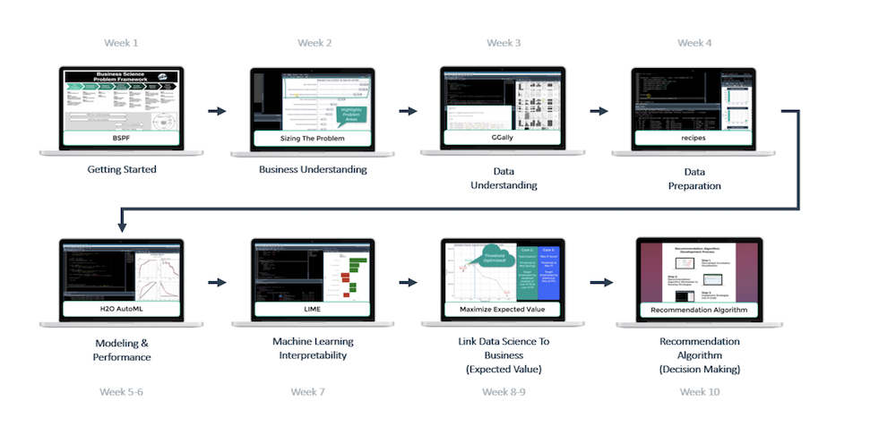

The shinymaterial app built using Eric Andersen’s shinymaterial package is an example of one of the Predictive Churn Analytics projects at work. This is a fantastic package(Thank you Eric) that enables shiny developers like me implement Material Design using R code; more about it here.
There are various online resources that detail solving binary classification problems such as Churn, but the one key resource that maximized my learning and application to a real-world product/s churn problem at work is Matt Dancho’s 10-weeks ROI-Driven Advanced ML Data Science course DS4B 201-R.

As a sole analytics person that manages the entire data-science workflow, I need a high impact tool-box, given resource, budget and time constraints. Matt Dancho’s Advanced ML course course provides that tool-box (examples: H2o automl algorithms + LIME which provides 30+ models in minutes + explainability that drives business insights, skimr for EDA), and the agile Business Science Problem Framework that provides a roadmap for data science project success.
App Example of H2o + LIME = Speed+Power+Explainability
Building the Churn predictive analytics shinymaterial application was fun and I look forward to building more in future. Check out Matt Dancho’s shiny app course.
I’ve included code chunks as examples of actual UI/server pieces of the app.
#
# UI Material Shiny app code for side_nav_tab_content
#
material_side_nav_tab_content(
side_nav_tab_id = "churn",
tags$br(),
material_row(
material_column(
width = 2,
material_card(
title = "",
depth = 4,
material_dropdown(
input_id = "Churn_select",
label = "Select Churn Vs",
choices = c(
"Region" = "Region",
"Industry" = "Industry",
"Xtra_Feature" = "Xtra_feature",
"Monthly Cohort" = "Monthly_Cohort",
"Auto Renew" = "AutoRenew",
"Frequency" = "Frequency",
"Recency" = "Recency",
"Tenure Days" = "Tenure_Days_bin",
"ProductUsage1" = "Produse1",
"App Launches" = "general_app_num_launches",
"SeatRange Bin" = "seats_total_bin"
),
selected = "Region"
),
tags$br(),
material_row(
material_column(
width = 5,
material_radio_button(
input_id = "churn_metric",
label = "Customer # By",
choices = c("Count" = "number",
"Dollars" = "dollars")
)
)
),
material_row(
material_column(
width = 5,
offset = 0 ,
material_checkbox(
input_id = "churn_percent",
label = "Percent",
initial_value = FALSE,
color = "#4caf50"
)
)
),
tags$br(),
material_row(
material_column(
width = 5,
material_switch(
input_id = "churn_clients",
label = "Churn Seats",
initial_value = TRUE,
color = my_col$Churn_Clients)
),
material_column(
width = 5,
material_switch(
input_id = "churn_customers",
label = "Churn CustNo",
initial_value = TRUE,
color = my_col$Churn_Customers)
)
)
)
),More on: Predicting Customer Churn 1
Share this post
Twitter
Google+
Facebook
Reddit
LinkedIn
StumbleUpon
Pinterest
Email